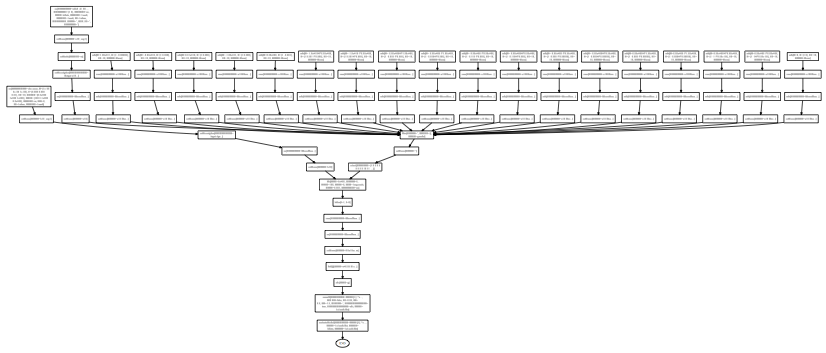

| LTPDA Toolbox™ | contents | |
Analysis objects are one type of LTPDA user object. The job of an analysis object is to bring together some numerical data with a set of descriptive meta-data. In addition, AOs are clever and can keep track of all the things you do to them. So at any time, you can look at the history of the AO to see what processing steps have happened in the past.
Example history trees are shown below:

|
 |
| |
Topic 1 - The basics of LTPDA | Making AOs | |
©LTP Team